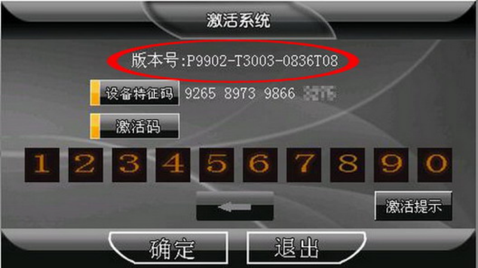
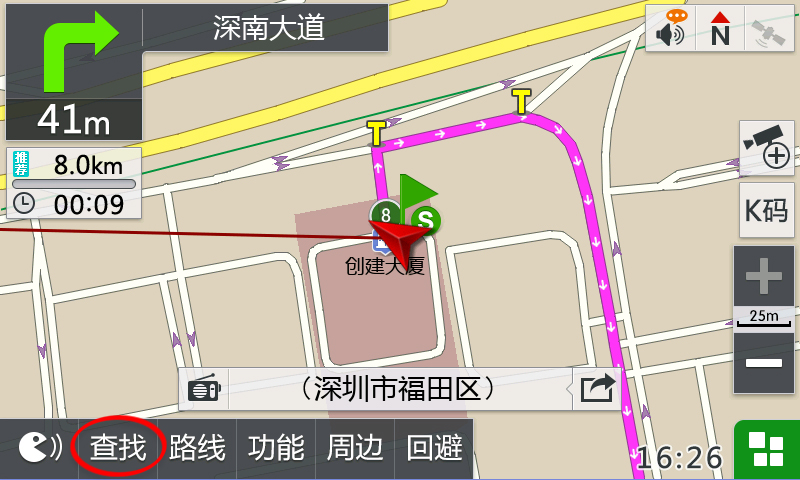

感谢您选择凯立德产品，以下是关于如何获取版本号的帮助信息。
如何获取版本号？
正版凯立德移动导航系统的版本号可在两种情况下获得，第一种情况是系统初次安装时，第二种是系统正在使用时，详情如下：
第一种情况：导航设备刚刚安装新的数据和程序后，将会弹出激活界面，从中可以直接获得版本号。
- C系列界面
-

- T系列界面
第二种情况：正在使用的导航设备获取系统版本号
方法1 直接查看版本信息，但C系列与T系列查询路径有所不同
C系列
第一步：打开凯立德移动导航系统，进入地图界面，点击“功能”
第二步：进入功能界面后，点击“帮助”
第三步：进入帮助界面后，“版本信息”
第四步：弹出版本信息界面，请记录导航系统版本号
T系列
第一步：打开凯立德移动导航系统，进入地图界面，点击“功能”
第二步：进入功能界面后，点击“辅助功能”
第三步：进入辅助功能界面后，点击“版本信息”
第四步：弹出版本信息界面，请记录导航系统版本号
方法2：进入导航系统，输入6个A 获取版本号
第一步：打开凯立德移动导航系统，进入地图界面，点击“查找”
-

- C系列界面
- T系列界面
第二步：在查找页面输入“AAAAAA”（6个A）
- C系列界面

- T系列界面
第三步：软件弹出新窗口，窗口中显示出本机器“地图版本号/版本号”，请您记录该版本号。
- C系列界面
- T系列界面
说明：如果使用上述方法无法查看到版本号信息，则证明您购买的凯立德GPS导航软件有可能是较早版本或盗版产品，详情请拨打0755-83250929进行咨询。
客户服务电话
0755-8325 0929